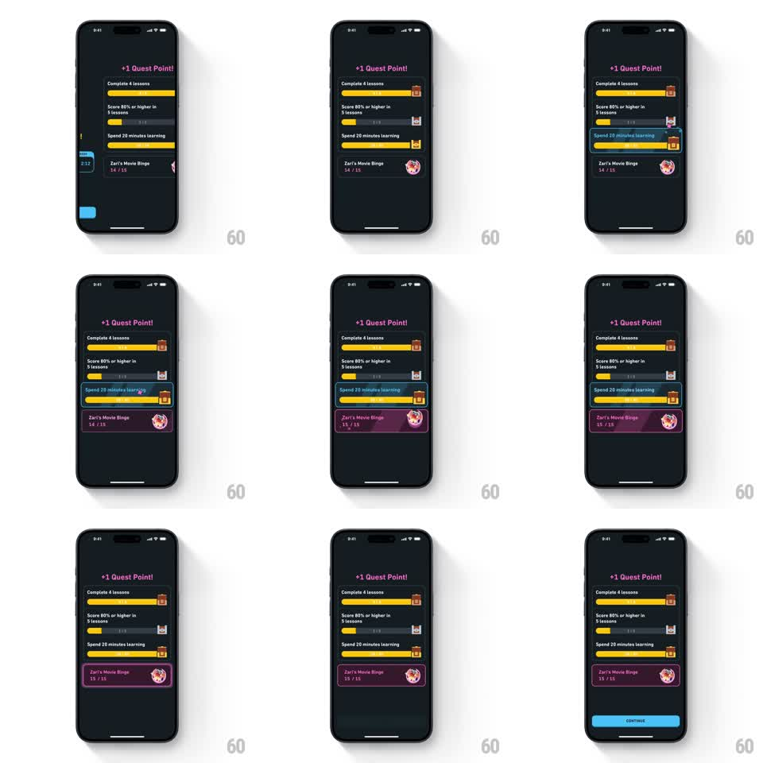

Media
Frame-by-frame

Rebuild this animation 1:1: Duolingo's quest completion - on the dark quests screen under "+1 Quest Point!", a sparkling quest point drops into the "Spend 20 minutes learning" progress bar, its bar fills to yellow complete, the "Zari's Movie Binge" quest card ticks 14/15 to 15/15 with a glow, and a blue CONTINUE button slides up.

Rebuild this animation 1:1: Duolingo's quest completion - on the dark quests screen under "+1 Quest Point!", a sparkling quest point drops into the "Spend 20 minutes learning" progress bar, its bar fills to yellow complete, the "Zari's Movie Binge" quest card ticks 14/15 to 15/15 with a glow, and a blue CONTINUE button slides up. ## Integration Integration: stack-agnostic spec - springs given as stiffness/damping, timed motions as duration + curve; map every value to your framework and animation library of choice. ## Scene Dark screen titled "+1 Quest Point!" in pink. A list of quest rows with progress bars: "Complete 4 lessons" (done), "Score 80% or higher in 3 lessons" (partial), "Spend 20 minutes learning" (completing). Below: a purple quest card "Zari's Movie Binge" with counter "14 / 15" and a badge icon. A blue CONTINUE button appears at the end. ## Motion spec Pattern: sparkle point drop with bar fill and counter tick. - The "+1 Quest Point!" title pops in (scale 0.8 -> 1.1 -> 1, spring ~320/16). - A glowing point orb with sparkle trail drops from the title area into the "Spend 20 minutes learning" bar (translateY 120pt arc, 400ms ease-in), bursting into 5-6 small sparkles on impact. - That bar fills from its partial state to full yellow (350ms ease-out) and its row highlights (background lightens 10%, 200ms). - The quest card's counter ticks 14/15 -> 15/15 (digit flips, 200ms) as the card pulses (scale 1 -> 1.04 -> 1, spring ~300/18) and a pink glow washes over it. - CONTINUE slides up from the bottom (280ms ease-out). ## Calibration - The drop path is visible - the orb travels from the title to the exact bar being completed. - Only the completing bar animates; the other rows stay static. ## Reduced motion The bar appears filled, counter shows 15/15, CONTINUE fades in (250ms). ## Don't miss - The sparkle burst on bar impact is small and contained, not full-screen confetti. - The card's badge icon gets a brief shine sweep when the counter completes.